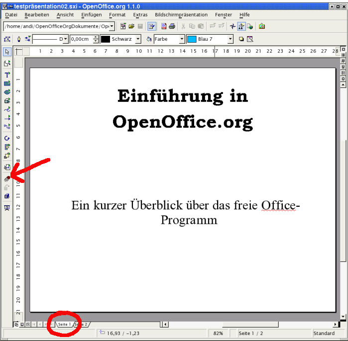
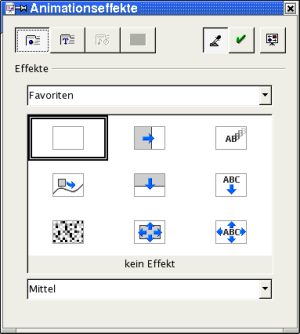
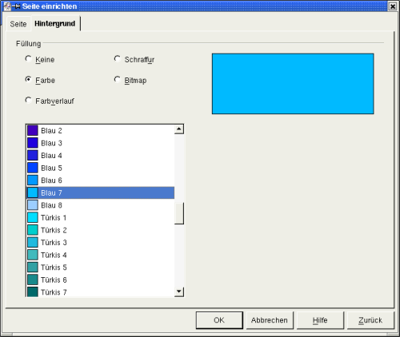
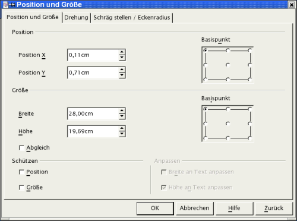

| [zurück] | [Hauptmenü] | -->[weiter] |
| [PDF] | ||
Effekte
Wechseln Sie zurück in die Zeichnungsansicht.
Wählen Sie auf den Karteireitern am unteren linken Rand des Bearbeitungsfensters die Seite 1 Ihrer Präsentation aus.

Abbildung
1: Auswahl Seite und Effekte
Markieren
Sie das (untere) Textfeld.
Rufen Sie über das Menü
Bildschirmpräsentation
- Effekte oder über die Effekte-Schaltfläche
in der Werkzeugleiste die Auswahlbox für
die Effekte auf.

Abbildung
2: Auswahlbox Effekte
Dort wählen Sie einen Effekt aus. Hierzu können Sie in dem Listenfeld (unterhalb des Textes „Effekte“) in verschiedenen Gruppen von Animationen nach einer passenden Alternative suchen. Den Effekt, der Ihnen gefällt, markieren Sie und weisen ihn über die Schaltfläche mit dem grünen Haken dem entsprechenden Objekt Ihrer Präsentation zu.
Wenn Sie die ganz rechte Schaltfläche am oberen Rand der Auswahlbox (Vorschaufenster) aktivieren, erscheint ein entsprechendes kleines Fenster auf der Arbeitsfläche. Nach Anwahl eines Effektes für Ihre aktuelle Seite können Sie mit einem Mausklick in dieses Fenster Ihre Auswahl begutachten.
Alternativ können Sie die verschiedenen Möglichkeiten von Effekten auch nach dem Auswählen durch Aufrufen der Bildschirmpräsentation am gesamten Bildschirm begutachten.
Es stehen Ihnen auch akustische Untermalungen für Ihre Präsentation zur Verfügung.
Diese können Sie in der Auswahlbox über die dritte Schaltfläche von links erreichen. In dem unteren Listenfeld finden Sie bereits eine Menge an mitgelieferten Klangdateien. Sollten Sie eine eigene Klangkomposition verwenden wollen, können Sie diese über die Schaltfläche rechts des Listenfeldes („Datei“) auswählen.
Entsprechend des Vorgehens für Ihre Seite 1 verfahren Sie nun für die Seite 2.
Auf Seite 2 klicken Sie in das Aufzählungstextfeld. Öffnen Sie erneut die Auswahlbox für Effekte und aktivieren Sie oben die zweite Schaltfläche Texteffekte. In dem Listenfeld darunter können Sie für die Gliederungspunkte eine Animation wählen. Sie können die Texte zum Beispiel von links dehnen lassen („Dehnen“ - „Dehnen von links“). In dem Listenfeld am unteren Rand der Auswahlbox können Sie für die einzelnen Effekte jeweils die Geschwindigkeit einstellen.
Hinter der dritten Schaltfläche von links („Extras“) am oberen Rand verbirgt sich die Option, mit der Sie ein Objekt nach seiner Darstellung verschwinden lassen können (Ausblenden, unsichtbar machen) (linke Schalfläche). Auch ist es möglich (rechte Schaltfläche) das Objekt mit einer bestimmten Farbe abzublenden. Wenn Sie dies beispielsweise auf das Aufzählungstextfeld anwenden, erscheint nach dem Abblenden ein entsprechend farbiges Rechteck.
|
|
Die Funktion Extras ist nur aktiviert, nachdem Sie einen Effekt aus der Liste zugewiesen haben. |
Die Schaltfläche oben in der Mitte der Auswahlbox („Reihenfolge“) führt zu den einzelnen Objekten auf der Folie. Die Reihenfolge ihres Erscheinens kann hier eingestellt werden. Die einzelnen Elemente können Sie ganz einfach mit gedrückter linker Maustaste an ihren neuen Platz ziehen.
Hintergrund und Hintergrundfarbe
Als nächstes geben Sie Ihrer Seite eine Hintergrundfarbe. Positionieren Sie dazu den Mauszeiger auf Ihrer Seite und rufen Sie im Menü Format - Seite auf.
|
|
Wenn Sie kein Objekt auf der Seite markiert haben, können Sie auch in einen freien Bereich der Seite mit der rechten Maustaste klicken und aus dem sich öffnenden Kontextmenü Seite - Seite einrichten auswählen. |
In der sich öffnenden Auswahlbox können
Sie auf dem Karteireiter „Hintergrund“
die Hintergrundfarbe Ihrer Bildschirmseite
einstellen.

Abbildung
3: Dialogbox Seite einrichten - Hintergrund
Sie können sich hierbei zwischen einheitlicher Hintergrundfarbe, Farbverlauf, Schraffur und Bitmap entscheiden. Sehen Sie sich die einzelnen Möglichkeiten an und probieren Sie deren Wirkung auf Ihre Präsentation aus.
|
|
Wenn Ihnen die in der Auswahlbox angebotenen Farben nicht zusagen, können Sie sich selbst eine neue Farbe erstellen. Weitere Informationen hierzu finden Sie in der Online-Hilfe, die Sie über das Menü Hilfe - Inhalt aufrufen. Geben Sie dort als Suchwort Farbe ein. |
Sie werden nach der Auswahl des Hintergrundes gefragt, ob die Hintergrundeinstellungen für alle Seiten Ihrer Präsentation gelten sollen. Hier können Sie also schnell und einfach den Hintergrund für alle Folien Ihrer Präsentation ändern (Masterfunktion).
Wollen Sie für Ihre Präsentationsfolien einen besonderen Hintergrund erstellen (z.B. eine Grafik, ein Logo verwenden), so erreichen Sie dies über das Menü Ansicht mit der Auswahl Hintergrund - Zeichnung. Nun steht Ihnen über das Menü Einfügen und den Befehl Grafik ein Nutzerdialog zur Auswahl der gewünschten Grafik zur Verfügung. Bestätigen Sie Ihre Auswahl mit „Öffnen“. Markieren Sie die Grafik und rufen Sie das Kontextmenü (rechte Maustaste) auf. Wählen Sie dort Position und Größe aus. In der folgenden Dialogbox können Sie z.B. die Größe und Ausrichtung Ihrer Grafik anpassen.

Abbildung
4: Dialogbox Position und Größe
In der Hintergrundansicht
können Sie auch die Textformate der
Gliederungstexte ändern und deren
farbliche Wirkung beurteilen (und deren Farbe abändern).
Verlassen Sie die Hintergrundansicht im Menü „Ansicht“
- „Seite“.